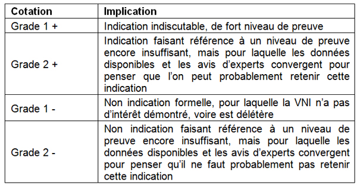
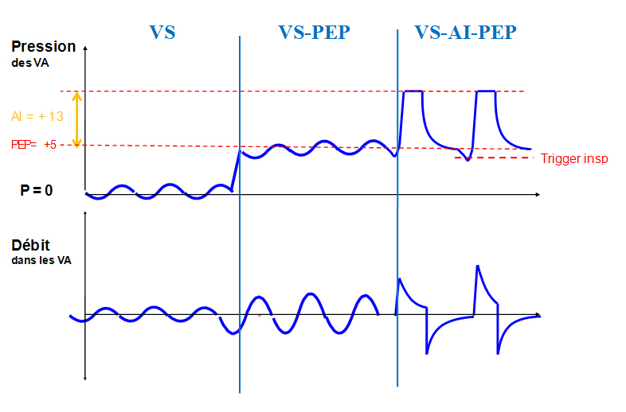
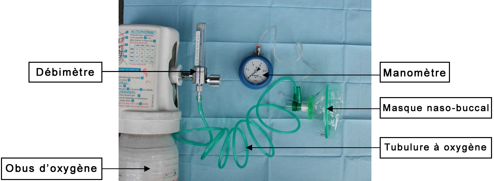

Bienvenue Sur Medical Education
Ventilation non invasive adulte
AdulteSpécialité : cardiologie / pneumologie /
Points importants
- La Ventilation Non Invasive (VNI) est une technique accessible aux urgentistes, en préhospitalier comme en salle d'accueil des urgences vitales
-
Deux modes respiratoires sont utilisables en médecine d'urgence
- la Ventilation Spontanée avec Pression Positive Continue (VS - PPC)
- la Ventilation Spontanée avec Aide Inspiratoire et Pression Expiratoire Positive (VS - AI - PEP)
- Importance du bon choix des matériels, des techniques et des réglages en fonction de la physiopathologie de chaque maladie
- Les principales indications de la VNI en urgence sont l'œdème aigu du poumon cardiogénique (OAPc) et la décompensation aiguë d'une bronchopneumopathie chronique obstructive (BPCO)
- Dans l'OAP cardiogénique, la VS-PPC et la VS-AI-PEP peuvent être utilisées
- Dans l'exacerbation de BPCO, seule la VS-AI-PEP peut être recommandée
- Nécessité de bonne compétence de l'équipe soignante
- La VNI ne doit pas retarder une intubation pour ventilation invasive lorsqu'elle s'avère nécessaire
- Toujours associer le traitement étiologique de la pathologie
Indications
On entend par VNI toute technique d’assistance ventilatoire n’ayant pas recours à une prothèse endotrachéale mais à des interfaces placées sur le visage
OBJECTIFS DE LA VNI EN CONTEXTE D’URGENCE
A court terme
- Amélioration des échanges gazeux et des paramètres d’oxygénation tissulaire
- Réduction du travail respiratoire
- Diminution du taux d’intubation trachéale
A moyen terme
La VNI est indiquée devant certaines étiologies de détresse respiratoire aiguë. Les indications validées par les récents consensus français et nord-américains sont cotés selon la méthodologie « GRADE » simplifiée retenue dans le consensus français.
 fichier_663 Tableau Indications de la VNI
- Réduction de la morbi-mortalité
- Réduction des complications liées à la ventilation invasive (pneumopathie, etc.)
- Réduction des problèmes liés au sevrage en réanimation
- Diminution de la durée d’hospitalisation
- Diminution du coût de santé publique
INDICATIONS INDISCUTABLES DE FORT NIVEAU DE PREUVE (GRADE 1 +)
Aux urgences
-
Limitations thérapeutiques :
- refus de l’intubation par le patient
- mauvais pronostic du patient
- fin de vie, en cas d’apport de confort par la VNI
- Traumatisme thoracique fermé, isolé, avec fractures de côtes limitées et/ou contusion pulmonaire, sans épanchement de la plèvre ni volet thoracique ; uniquement après réalisation du bilan lésionnel (au minimum radiographie du thorax et scanner thoracique)
- Décompensation aiguë de maladies neuromusculaires chroniques : myopathies, sclérose latérale amyotrophique, etc.
- Décompensation aiguë d’une insuffisance respiratoire chronique restrictive
- Décompensation aiguë de mucoviscidose
- Insuffisance respiratoire aiguë de l’immunodéprimé si PaO2/FiO2 > 200 et sans infiltrat pulmonaire
- Pré-oxygénation pour préparer l’intubation
En Préhospitalier
- Décompensation de BPCO, sous réserve de disposer des matériels ayant les qualités requises et des compétences suffisantes pour la mise en œuvre d’une VS – AI – PEP
- Certaines équipes l’utilisent dans les noyades, mais trop peu de données sont disponibles pour en généraliser l’utilisation dans cette indication
Contre-indications
CONTRE-INDICATIONS ABSOLUES
Environnementales et techniques
-
Environnement inadapté ou à risque :
-
en préhospitalier :
- expertise insuffisante de l'équipe
- patient inaccessible
- brancardage ou transport rendu impossible ou dangereux par la mise en œuvre de la VNI...
-
aux urgences, carence de surveillance :
- absence de personnels qualifiés au lit du malade
- forte affluence
- pas d'unité de soins intensifs aux urgences
-
en préhospitalier :
Non-adhésion de la part du patient
- Barrière de langage
- Maladie psychiatrique invalidante
- Démence
Morphotype particulier ne permettant pas l'application d'une interface adaptée
- Obésité
- Séquelles de chirurgie délabrante de la face...
Neurologiques
- Coma
- Convulsions, état de mal épileptique
- Traumatisme crânio-facial grave
- Tétraplégie traumatique à la phase aiguë
Cardio-vasculaires
- Arrêt cardiaque
- Post arrêt cardiaque immédiat
- Troubles du rythme ventriculaires graves
- Etat de choc non stabilisé
- Sepsis grave, choc septique
- Syndrome de défaillance multiviscérale (SDMV)
Respiratoires
- Obstruction des voies aériennes supérieures non levée
- Epuisement respiratoire : pauses respiratoires, gasps...
- Hémoptysie de moyenne à grande abondance
- Pneumothorax plèvre non drainée
- Plaie soufflante du thorax
Digestives
- Vomissements incoercibles
- Hématémèse
- Toute situation à haut risque d'inhalation
SITUATIONS CONTROVERSEES
- Asthme aigu grave : pas de données cliniques suffisantes
-
Pneumopathie hypoxémiante : pas de données suffisantes, elle n'est pas recommandée en première intention en cas de :
- défaillance extra-respiratoire
- PaO2 /FiO2 < 150 mmHg
- GCS < 11, agitation
- Syndrome de détresse respiratoire aiguë de l'adulte (SDRA)
Présentation du matériel
LES INTERFACES UTILISABLES EN VNI
Masque naso-buccaux
- Le masque naso-buccal = interface de première intention en situation d'urgence
- Choisir la taille adaptée à la face du patient (sinon fuites)
-
Taille adaptée :
- le masque repose en haut sur la base de l'arrête nasale et en bas sur le sillon labio-mentonnier même bouche ouverte
- il doit englober les commissures labiales
- Adapter au mieux le masque à la face (gonfler le bourrelet, harnais de fixation adapté...)
- Placer une protection nasale (pansement colloïde sur l'arête du nez), surtout si durée de séance > 30 min
Autres interfaces
-
Masque faciaux :
- plus de confort
- mais augmentent l'espace mort (correction de la capnie plus lente)
- validés pour la VS-AI-PEP
- Les casques (ou « helmets » des anglo-saxons) : N'ont pas encore de place en médecine d'urgence
- Cas particuliers des malades déjà équipés au domicile : il s'agit le plus souvent de masques nasaux exclusifs. En situation d'urgence, ces interfaces peuvent être utilisées si le patient en a une bonne expérience, en mode VS-AI-PEP
- Les autres interfaces (olives nasales ou autres) n'ont pas leur place en médecine d'urgence
MATERIELS UTILISABLES EN URGENCE POUR LA V.S. - P.P.C.
Choix du respirateur
- Les respirateurs fonctionnent sur le principe d'une alternance d'ouvertures/fermetures de valves pour déclencher les phases inspiratoires et expiratoires (risque de majorer le travail inspiratoire)
- Il existe quelques respirateurs destinés à la VNI
Systèmes à débit libre « industrialisés »
-
Leur principe est basé sur l'effet Venturi :
- la consigne de pression (le niveau de PEP) est obtenue en associant la délivrance d'un débit de gaz > 100 L/min avec un niveau de PEP réglable (2,5 ; 5 ; 7,5... cm H2O)
- ces systèmes ont pour avantage principal d'avoir une PEP indépendante du débit de gaz administré et de ne pas avoir à travailler en FiO2 100%. L'inconvénient principal est d'être très consommateurs en O2 (débit > 100 L/min...)
-
Les générateurs de débit de type Boussignac :
- la PEP est générée par l'accélération du gaz inspiratoire (en pratique l'oxygène) au travers de 4 jets obliques à 45° dans un cylindre, créant ainsi une « hélice virtuelle » avec une différence de pression de part et d'autre du cylindre
- le niveau de pression voulu (la PEP) varie directement en fonction du débit de gaz délivré, aux alentours de 15 à 20 L/min
- il permet une autonomie en oxygène plus prolongée comparativement aux systèmes précédents
-
Remarques :
- les systèmes à débit libre « classiques » comportant une valve de PEP raccordée directement sur le masque naso-buccal ne sont plus d'actualité et n'ont plus leur place en médecine d'urgence
MATERIELS DE VS-AI-PEP
La VS-AI-PEP fait appel à des respirateurs modernes ayant des capacités
- De réglage précis des niveaux de pression : PEP et AI
- Des capacités de cyclage précis (alternances d'ouvertures/fermetures des valves pour adapter au mieux les cycles respiratoires)
-
La qualité du cyclage repose avant tout sur l'existence de triggers (littéralement « déclencheurs ») performants adaptés à la VNI :
-
le trigger inspiratoire est réglable et correspond à l'effort (la dépression dans le circuit de ventilation) que va devoir faire le patient pour provoquer le déclenchement de l'inspiration :
- si trigger trop sensible (proche de zéro), risque d'auto-déclenchements intempestifs donc d'asynchronie patient/machine
- si trigger pas assez sensible, nécessité d'effort inspiratoire trop important pour le patient donc risque de majorer le travail inspiratoire
- le trigger expiratoire est le plus souvent automatique sur les respirateurs : il détecte le début de l'effort expiratoire du patient et autorise l'expiration par ouverture de la vanne expiratoire. Sur certaines machines, le trigger expiratoire est réglable, en général en pourcentage du débit inspiratoire maximal ; mais requiert un niveau expert
-
le trigger inspiratoire est réglable et correspond à l'effort (la dépression dans le circuit de ventilation) que va devoir faire le patient pour provoquer le déclenchement de l'inspiration :
- De réglage précis de la FiO2 délivrée
- Des réglages d'alarmes et des capacités de monitorage performants et fiables
Respirateurs disponibles en SAUV
- La plupart des respirateurs modernes de réanimation présents en SAUV disposent d'un mode de ventilation fiable dédié à la VNI en VS-AI-PEP
Respirateurs de transport
- Seuls certains respirateurs de transports récents et « haut de gamme » ont les caractéristiques requises pour la pratique de la VS-AI-PEP en préhospitalier ou aux urgences
Description de la technique
PREPARATION DU PATIENT
- Patient confortablement installé, ½ assis
- Patient informé sur la technique qui va être employée : l'adhésion au traitement est un critère majeur de réussite de la technique
- Patient perfusé ou en cours de perfusion, monitoré (scope, PA non invasive, SpO2, FR) : ces gestes ne doivent pas retarder la mise en œuvre de la VNI
CHOIX DU MODE
Le mode de ventilation en CPAP
-
Acronymes utilisés pour la CPAP :
- la VS - PEP est l'acronyme retenu par le consensus Français : « Ventilation Spontanée avec Pression Expiratoire Positive »
- est couramment assimilée à la VS-PPC (Ventilation Spontanée avec Pression Positive Continue), appelée par les anglophones CPAP (Continuous Positive Airway Pressure)
- sur le plan physiologique, il y a une légère différence, dans la mesure où dans la VS-PEP, la pression positive est expiratoire, alors qu'elle est continue lors de la VS-PPC. Ces deux termes restent cependant confondus dans le dernier consensus français
-
Principes de la CPAP :
-
le patient respire spontanément au travers d'une interface qui lui délivre un gaz :
- avec un niveau de pression permanente préalablement réglé
- parfois avec une FiO2 réglée, si le dispositif utilisé le permet
-
le patient respire spontanément au travers d'une interface qui lui délivre un gaz :
- Objectif = améliorer le recrutement alvéolaire : permet de corriger l'hypoxémie (mais peu d'effets sur le travail respiratoire) = mode recommandé pour les OAP cardiogéniques
Le mode de ventilation en VS - AI - PEP
-
Acronymes utilisés pour la VS - AI - PEP :
- la VS-AI-PEP est l'acronyme retenu par le consensus Français : « Ventilation Spontanée avec Aide Inspiratoire et Pression Expiratoire Positive »
- elle correspond à la BiPAP (Bi- level Positive Airway Pressure, littéralement « pression positive à deux niveaux dans les voies aériennes ») des anglo-saxons
- Principes de la VS-AI -PEP = PEP + niveau de pression supplémentaire à l'inspiration (Aide Inspiratoire = AI)
-
Objectifs :
- faciliter le travail respiratoire
- améliorer la mécanique ventilatoire du patient : corriger l'hypercapnie = mode recommandé pour les BPCO décompensées
- Particularité de l'OAPc sous VS-AI-PEP : la VS-AI-PEP peut être dans l'OAPc hypercapnique
Effets de la VNI sur les courbes de respiration
 fichier_275 Photo Effet de la VNI sur les courbes de respiration
DESCRIPTION DE LA CPAP
VNI de Boussignac
 fichier_274 Photo CPAP de Boussignac
-
Préparation du kit :
- connecter la valve de Boussignac sur le masque naso-buccal choisi
- raccorder la tubulure à oxygène (verte) au masque et au débitmètre spécifiquement prévu à cet effet (délivre un débit jusqu'à 30 L/min)
- connecter le débitmètre sur la source d'oxygène sous pression (obus d'oxygène ou arrivée murale de fluides hospitaliers)
- insérer le tube de connexion (transparent) dans le manomètre, puis son autre extrémité sur le masque
- ouvrir le débitmètre d'oxygène et vérifier le bon fonctionnement du montage
- le matériel est prêt à l'emploi
-
Technique pas à pas :
- fichier_838 fichier_838 - - - CPAP de Boussignac
- ouvrir la vanne du détendeur de l'obus d'oxygène
- régler le débitmètre aux alentours de 12 à 15 L/min
- approcher le masque du visage du patient, avec douceur
- placer le masque sur le visage sans forcer, tout en rassurant le patient, pour lui faire accepter la technique
- si la technique est bien supportée, maintenir le masque sur le visage avec la main et le fixer avec le harnais prévu à cet effet ; prendre le temps de bien l'adapter
-
vérifier que le niveau de pression sur le manomètre correspond à celui voulu :
- l'objectif initial est d'avoir une PEP aux alentours de 2,5 cm H2O
- si la technique est bien tolérée, monter progressivement par paliers de 2,5 cm H2O, jusqu'à 7,5 ou 10 cmH2O
- la légère diminution de la PEP mesurée par ce dispositif (variations de l'aiguille du manomètre) au cours de l'inspiration est normale
Préparation d'un système Venturi
-
Préparation du kit :
- connecter le générateur de flux à l'oxygène mural ou à la bouteille d'O2
- la FiO2 est réglée au minimum et le débit de gaz au maximum
- connecter le tuyau annelé au générateur d'un côté et au masque à l'autre extrémité
- ne mettez pas de valve de PEP
-
Technique pas à pas :
- fichier_839 fichier_839 - - - VS-PEP système Venturi
- ouvrir la bouteille d'O2 et allumer le générateur
- approcher le masque du visage du patient, avec douceur
- placer le masque sur le visage sans forcer, tout en rassurant le patient, pour lui faire accepter la technique
- si le masque est bien supporté, mettre la valve de 5 cmH2O sur le masque. Attendre quelques minutes en appliquant toujours le masque manuellement
- mettez ensuite le harnais sans trop le serrer
- vérifier l'absence de fuite autour du masque
DESCRIPTION DE LA VS-AI-PEP
Préparation du matériel
-
Préparation du respirateur :
- le montage du respirateur et du circuit de ventilation est identique à celui utilisé pour un patient intubé
- le circuit de ventilation est simplement raccordé au masque naso-buccal au lieu d'une sonde d'intubation
- Humidificateur : avec l'emploi d'un respirateur à turbine et une FiO2 faible (30 à 40%), on peut se passer initialement d'humidificateur, afin de réduire l'espace mort. En cas de FiO2 élevée, les filtres échangeurs de chaleur et d'humidité sont suffisants
Technique pas à pas
- Mettre en marche le respirateur
- Choisir le mode « VNI » en mode VS-AI-PEP
-
Réglage de l'AI et des triggers :
- régler initialement l'aide inspiratoire entre 5 et 8 cm H2O
-
le cyclage dépend des triggers :
- débuter avec un trigger inspiratoire le + sensible possible (-0,5 à - 1 cm H2O)
- le trigger expiratoire est le plus souvent automatisé sur le respirateur
-
Réglage de la PEP et de la FiO2 : ce sont les principaux déterminants de l'oxygénation :
- débuter avec une FiO2 aux alentours de 30%
- régler la PEP initialement entre 2,5 et 5 cm H2O
- Régler la fréquence respiratoire de sécurité (s'appliquant en cas de bradypnée ou pause respiratoire) à 10 cycles/min
fichier_852 fichier_852 - - - Technique VNI avec système ouvert
Précautions d’emploi
ENVIRONNEMENT ADAPTE
La VNI doit impérativement être réalisée dans un contexte adapté
- Patient conditionné comme tout patient d'urgence réanimatoire : perfusion, scope...
- Environnement technique adéquat : matériels de réanimation (défibrillateur, matériel d’intubation et ventilation invasive…) à proximité immédiate et prêts à l'emploi
- Equipe médicale et soignante formée et disposant d'une expérience suffisante
SURVEILLANCE CONSTANTE
- Le scope et les réglages des alarmes du respirateur sont nécessaires
- Ils ne supplantent pas la présence indispensable d'une personne qualifiée présente en permanence au lit du malade pour répondre immédiatement à toute complication (retrait immédiat du masque en cas de vomissements...)
Pièges éventuels
GESTION DES FUITES
-
Les fuites sont le plus souvent dues à l'interface qui peut être :
- inadaptée à la morphologie faciale du patient : modifier la taille ou la forme du masque
- de taille adéquate mais mal placée sur le visage : trop haute, trop basse, asymétrique
- de taille adéquate et correctement placée mais insuffisamment appliquée sur le visage : serrer progressivement le harnais de fixation
- Les autres causes de fuites sont liées aux asynchronies patient/machine
GESTION DES ASYNCHRONIES PATIENT/MACHINE
- Asynchronie = toute situation pendant laquelle le patient et la machine ne sont pas en phase
-
Les principales causes d'asynchronies, sont :
- non déclenchement du trigger inspiratoire : le patient fait un effort inspiratoire mais la machine ne déclenche pas de cycle. Il faut alors augmenter le trigger inspiratoire (plus proche de zéro)
- auto-déclenchements intempestifs : la machine provoque des inspirations alors que le patient est en phase expiratoire. Il faut alors réduire la sensibilité du trigger inspiratoire (diminuer de 0,5 à 1 cm H2O)
- non déclenchement du trigger expiratoire : le patient tente d'expirer alors que la machine continue à insuffler du gaz
-
vitesse d'application de la consigne de pression (débit et rampe de pressurisation) inadéquate :
- si la pente est trop forte, elle est source d'inconfort pour le patient et éventuellement de fuites inspiratoires malgré une interface adaptée
- si la pente est trop faible, elle majore le travail inspiratoire
Complications
ECHEC DE LA VNI
Le recours à l'intubation, qui ne doit pas être retardée en cas de besoin
Facteurs prédictifs d'échec (à la mise en œuvre de la VNI)
-
Dans l'OAPc :
- FR > 38 cycles/min
- pneumonie communautaire associée
- sepsis associé
-
Dans la décompensation de BPCO :
- score d'activité physique quotidienne défavorable (autonomie limitée, oxygénodépendance importante)
- comorbidités cardio-vasculaires
- pneumopathie à l'origine de la décompensation
- troubles de la conscience avec GCS < 11
- FR > 35 cycles/min
- pH < 7,25
Facteurs évolutifs d'échec
-
Dans l'OAPc, l'intérêt de la VNI doit être réévalué à la 1re heure :
- un rapport PaO2/FiO2 < 200 est un critère associé à un risque d'échec accru
-
Dans la décompensation de BPCO, l'intérêt de la VNI doit être réévalué à la 2e heure : sont alors associés à un risque d'échec accru :
- troubles de la conscience avec GCS < 11
- FR > 35 cycles/min
- pH < 7,25
AUTRES COMPLICATIONS
Provenant de l'interface
-
Erythème, ulcération cutanée : mesures préventives :
- protection cutanée nasale
- serrage adapté du harnais
- changement d'interface
-
Allergies cutanées : mesures préventives :
- changement d'interface
-
Réinhalation du CO2 expiré (rebreathing) : mesures préventives :
- réduction de l'espace mort
- changement d'interface
- application d'une PEP
Provenant du débit ou des pressions
-
Vomissements : mesures préventives :
- sonde nasogastrique
- retrait immédiat de l'interface
-
Sécheresse des VAS : mesures préventives :
- humidification
-
Distension gastrique (ingestion d'air) : mesures préventives :
- sonde gastrique, réduction des pressions
-
Otalgie, douleur naso-sinusienne : mesures préventives :
- réduction des pressions
-
Distension pulmonaire (hyperinflation dynamique) : mesures préventives :
- optimisation des réglages (réduction de la PEP et du Tinsp)
-
Pneumothorax : mesures préventives :
- arrêt de la VNI, drainage thoracique
Surveillance
SURVEILLANCE DU PATIENT
- Monitorage : FC, SpO2, FR, PNI
- Etat général du patient : coopérant, vomissement, sa position, synchronie avec le respirateur
-
Etat respiratoire :
- amélioration de l'oxygénation (SpO2)
- persistance ou apparition de signes de lutte/d'épuisement (VTexp bas)
- Etat hémodynamique
- Etat neurologique : amélioration de l'état neurologique (coma, agitation...)
SURVEILLANCE DU MATERIEL
- Surveillance de la position du masque
- Surveillance des fuites
- Surveillance des tubulures : coudure, expectoration...
SURVEILLANCE ADAPTEE AU MODE DE VNI CHOISI
CPAP
- Objectif = SpO2 > 95%
- Si persistance de SpO2 < 95%, augmenter la PEP par paliers de 2,5 cm H2O (ne pas dépasser 10 cm H2O)
-
En cas d'intolérance hémodynamique :
- baisser le niveau de PEP par paliers de 2,5 cm H2O pour trouver le niveau de PEP offrant le meilleur compromis oxygénation/tolérance hémodynamique
- ne pas oublier que la cause de l'OAPc peut être celle de l'HoTA : IDM, rupture de valve mitrale, tamponnade... toujours associer le traitement étiologique !
VS - AI - PEP
-
Objectifs :
- amélioration de la mécanique respiratoire du patient
- éviter l'épuisement respiratoire et l'intubation
- correction progressive de l'hypercapnie
- SpO2 > 90%
- 15 < FR < 25 cycles/min
- 6 < Vtexp < 8 mL/kg
- réglage optimal : meilleur compromis entre l'efficacité de l'assistance respiratoire, l'importance des fuites et la tolérance hémodynamique
-
Adaptation des triggers :
-
trigger inspiratoire :
- si auto-déclenchements intempestifs, vérifier avant tout la présence de fuites expiratoires et les corriger le cas échéant : positionnement de l'interface, modification du volume d'air dans le bourrelet, serrage du harnais, voire changement d'interface...
- si auto-déclenchements malgré la correction des fuites, réduire la sensibilité du trigger inspiratoire (avec précaution)
-
trigger expiratoire :
- son réglage est le plus souvent automatique
- en cas de défaut de détection des efforts expiratoires du patient, vérifier avant tout l'absence de fuites prolongées à l'insufflation. En cas de fuites, les corriger en adaptant au mieux l'interface
- si pas de fuites, augmenter la sensibilité du débit expiratoire aux alentours de 25 à 50% du débit (requiert une bonne expertise de la VNI)
-
trigger inspiratoire :
-
Adaptation du niveau d'AI :
- ne pas attendre une correction rapide de la capnie : un patient sous VS-AI-PEP pour BPCO décompensée met beaucoup plus de temps à s'adapter et à s'améliorer qu'un patient sous VS-PEP pour OAPc...
-
le niveau d'AI doit être adapté essentiellement en fonction du volume courant expiré cible (VTexp de 6 à 8 mL/kg) :
- si le Vtext est insuffisant, augmenter l'AI par paliers de 2 cm H2O, sans dépasser 15 cm H2O, exceptionnellement 20 cm H2O
- si le Vtexp est trop important, le risque est de majorer l'hyperinflation dynamique et d'aggraver le patient : réduire l'AI par paliers de 2 cm H2O
-
Adaptation de la PEP :
- le réglage de la PEP a pour objectif de palier à l'influence de la PEP intrinsèque (auto-PEP) sur le travail inspiratoire
- augmenter la PEP par palier de 1 à 2 cmH2O si efforts inspiratoires inefficaces (avec asynchronie à l'augmentation de la sensibilité du trigger inspiratoire)
-
l'idéal est de régler la PEP (PEPext) au plus proche de la PEP intrinsèque (PEPint ou auto-PEP) du patient :
- si PEPext < PEPint, le risque est de majorer les efforts inspiratoires
- si PEPext > PEPint, le risque est de majorer les efforts expiratoires et d'augmenter le risque d'hyperinflation dynamique
-
Adaptation de la FiO2 :
- chez le patient dont les réglages précédents ne permettent pas une correction rapide de la SpO2 (dans la BPCO, objectif de SpO2 > 90%, dans l'OAPc, SpO2 > 95%), augmenter la FiO2 par paliers de 10%
CRITERES DE POURSUITE OU D'ARRET DE LA VNI
-
Doit être interrompue en cas :
- d'amélioration soutenue du patient en dehors d'une séquence de VNI, avec régression des signes cliniques d'IRA (plus rapide dans l'OAP), oxygénation efficace, correction de l'acidose
- de survenue d'une contre-indication
- d'intolérance
- d'inefficacité nécessitant une intubation
- Ne doit pas être interrompue brutalement au-delà de la phase initiale de la prise en charge de l'IRC décompensée
Bibliographie
- Baillard C, Fosse JP, Sebbane M, Chanques G, Vincent F, Courouble P et al. Noninvasive ventilation improves preoxygenation before intubation of hypoxic patients. Am J Respir Crit Care Med 2006;174:171-7
- British Thoracic Society Standards of Care Committee. BTS Guideline : Non-invasive ventilation in acute respiratory failure. Thorax 2002;57:192-211
- Carlucci A, Richard JC, Wysocki M, Lepage E, Brochard L. Noninvasive versus conventional mechanical ventilation. An epidemiological survey. Am J respire Crit Care Med 2001;163:874-80
- Chiumello D, Pelosi P, Carlesso E, et al. Noninvasive positive-pressure ventilation delivered by helmet vs. standard face mask. Intensive Care Med 2003;29:1671-9
- Evans TW. International Consensus Conference in Intensive Care Medicine : non invasive positive pressure ventilation in acute respiratory failiure. Organised jointly by the American Thoracic Society, the European Respiratory Society, the European Society of Intensive Care Medicine, and the Société de Réanimation de Langue Française, and approved by the ATS Board of Directors, December 2000. Intensive Care Med 2001;27:166-78
- GRADE working group. Grading quality of evidence and strength of recommendations. Br Med J 2004;328:1490-8
- Keenan S, Sinuff T, Cook D, et al. Does noninvasive positive-pressure ventilation improve outcome in acute hypoxemic respiratory failure? A systematic review. Crit Care Med 2004;32:2516-23
- Mehta S, Hill NS. Noninvasive ventilation - State of the art. Am J Respir Crit care Med 2001;163:540-77
- Nava S, Carbone G, DiBattista N, Bellone A, Baiardi P, Cosentini R et al. Noninvasive ventilation in cardiogenic puklmonary edema : a multicenter randomized trial. Am J Respir Crit Care Med 2003;168:1432-7
- Peñuelas O, Frutos-Vivar F, Esteban A. Noninvasive positive-pressure ventilation in acute respiratory failure. CMAJ. 2007;177:1211-8
- Peter JV, Moran JL, Hughes JP, et al. Effect of noninvasive positive-pressure ventilation (NIPPV) on mortality in patients with acute cardiogenic pulmonary oedema: a meta-analysis. Lancet 2006;367:1155-63
- Ram FS, Picot J, Lightowler J, et al. Noninvasive positive-pressure ventilation for treatment of respiratory failure due to exacerbations of chronic obstructive pulmonary disease. Cochrane Database Syst Rev 2004;(3):CD004104
- Ram FS, Wellington S, Rowe B, et al. Noninvasive positive-pressure ventilation for treatment of respiratory failure due to severe acute exacerbations of asthma. Cochrane Database Syst Rev 2005;(3):CD004360
- Schonhofer B, Sortor-Leger S. Equipment needs for noninvasive mechanical ventilation. Eur Respir J 2002;20:1029-36
- Sinuff T, Keenan S. Clinical practice guideline for the use of noninvasive positive-pressure ventilation in COPD patients with acute respiratory failure. J Crit Care 2004;19:82-91
Auteur(s) : Frédéric JOYE